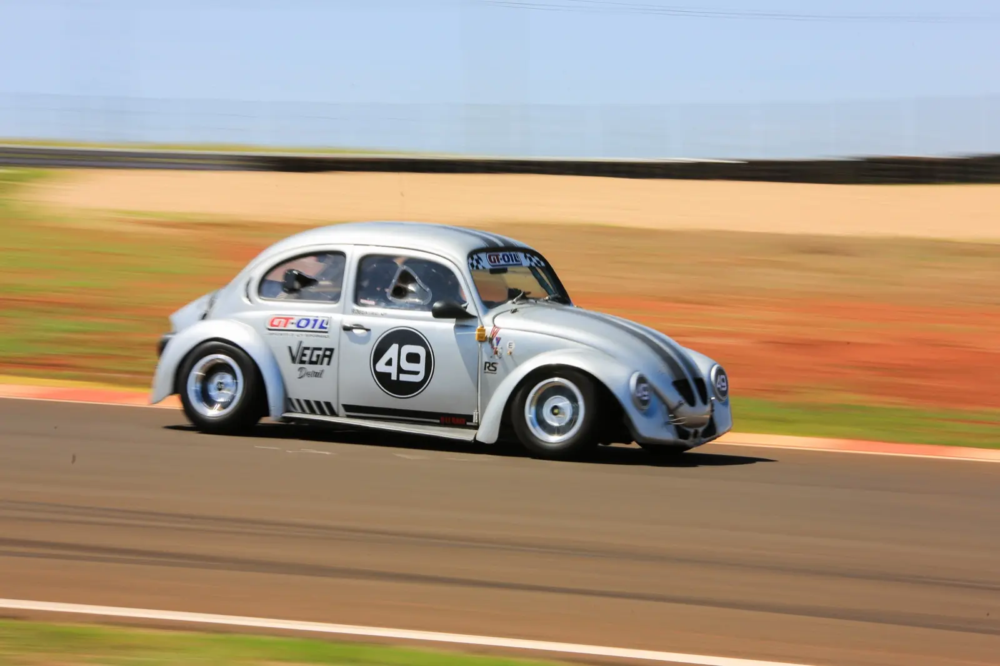
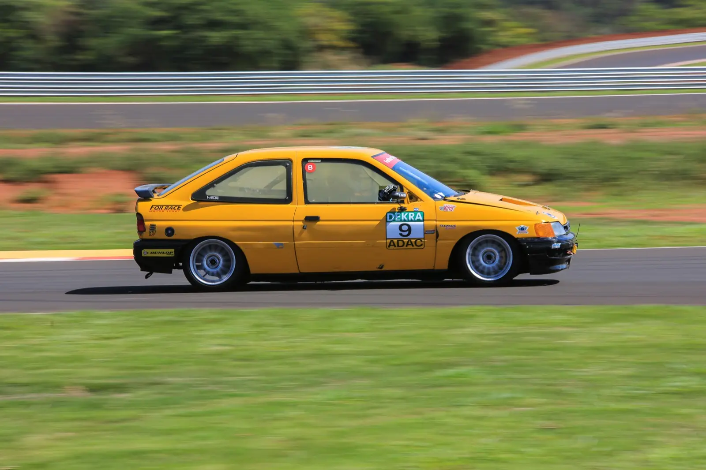
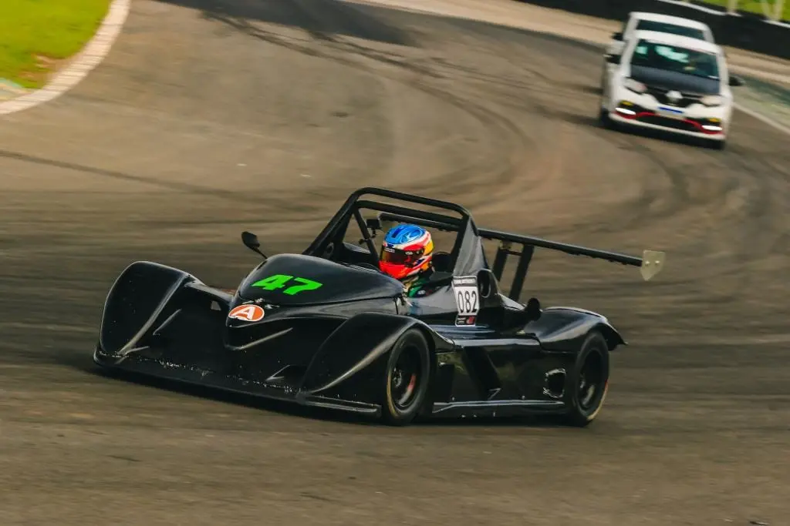
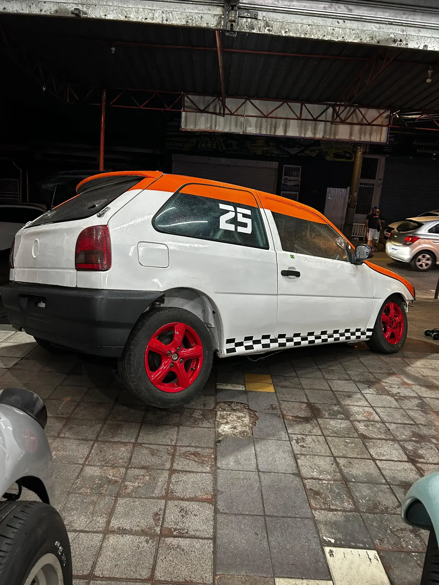

Copa Fusca
Preparação estrutural, upgrade de freio, injeção programável e setup de pista mista.
Indisponível
Preparação completa de projetos para rua e pista. O Nosso foco é extrair o máximo de desempenho, garantindo confiabilidade e um acabamento técnico impecável
Ver projetos
Preparação estrutural, upgrade de freio, injeção programável e setup de pista mista.

Performance e leveza num conjunto clássico. Motor AP 1.9 preparado, injeção programável FT450, pneus semi-slick e alívio de peso agressivo.

A experiência definitiva em pista. Protótipo monoposto de 200cv com motor AP 2.0 traseiro, pneus slick e aerodinâmica extrema

Motor AP 1.6, FuelTech FT450 e suspensão de competição. Um conjunto ágil e confiável, pronto para acelerar forte na pista.
Fale com a equipe ForRace para definir escopo, prazo e entrega técnica.